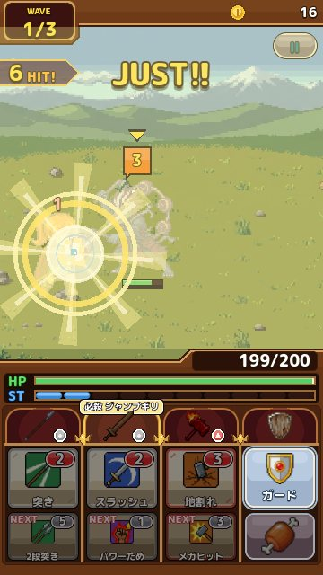

ガードの極意：ジャストとミラクルを決めるコツ
敵の攻撃に合わせてボタンを押す「ガード」のタイミングと、上達のコツを解説します。 更新：2026-11-13
ガードは 3 段階
敵が攻撃してくる瞬間にガードボタンを押すと、受けるダメージを減らせます。押した早さで結果が 3 段階に分かれます。
- ガード：受付の時間の中で押せた。ダメージが盾の DEF に応じて減ります
- ジャストガード：当たる直前のせまい時間で押せた。ダメージが大きく減り、ST が 2 回復します
- ミラクルガード：当たる瞬間ぴったり。ダメージがなくなり、HP が回復して、ST が満タンになります
このゲームでは、HP を回復できるのは基本的にミラクルガードだけです。長い戦いを乗り切れるかどうかは、ミラクルガードをどれだけ決められるかにかかっています。

攻撃の合図を見る
カウントが 0 になった敵は、まず「!!」の印を出し、少しためてから攻撃してきます。「!!」が出てから当たるまでの時間は、どの敵でもほぼ同じです。慣れてくると、「!!」を見てから体が勝手にリズムを取れるようになります。
コツは、ボタンを「早めに押して待つ」のではなく、「当たる瞬間に合わせて押す」ことです。早く押しすぎると構えが終わってしまい、ガードになりません。ボタンを押したあと、もう一度押せるようになるまで少し時間がかかるので、連打もおすすめできません。
連続攻撃に気をつける
強い敵の中には、1 回の番に何発も続けて攻撃してくるものがいます。連続攻撃のときは、印の下に小さな点が並び、何発来るかがわかります。1 発ごとにガードの判定があるので、最初の 1 発でミラクルが出ても、気をぬかずに次の発にも合わせましょう。
ボスの必殺技は、とくに威力が高く、名前が大きく出ます。必殺技の前は、手を止めてガードに集中するのが安全です。
どうしても難しいときは
ガードの受付の長さは、難易度で変わります。くわしくは 難易度のページ にまとめました。イージーにすると受付が広くなり、ミラクルガードの回復も大きくなります。
また、Safari やほかのブラウザでは、画面に触れてから反応するまでにわずかな遅れがあります。「設定」でガードの補正を変えると、自分の指の感覚に合わせられます。早すぎると感じたら遅めに、遅すぎると感じたら早めにして、何度か試してみてください。
練習におすすめの場所
アーケディア城には、何度たたいても倒れないかかしがいます。かかしはいろいろな速さで攻撃してくるので、ガードのタイミングを落ちついて練習できます。新しい難易度に変えたときや、しばらく遊んでいなかったときは、かかしで指をならしてから冒険に出ると安心です。
上達のチェックリスト
- 「!!」が出てから押すまでの間を、心の中で一定のリズムで数えている
- 押したあと、すぐにもう一度押そうとしていない
- 連続攻撃では、1 発目のあとも次の発の印を見ている
- ボスの必殺技の前に、攻撃の手を止めて画面に集中している
- 指を画面からなるべく離さず、ガードボタンの近くに置いている
全部できるようになると、ジャストガードが安定して出るようになります。そこからさらに一歩ふみこんで、「当たる瞬間」に指を合わせる意識を持つと、ミラクルガードも決まりはじめます。